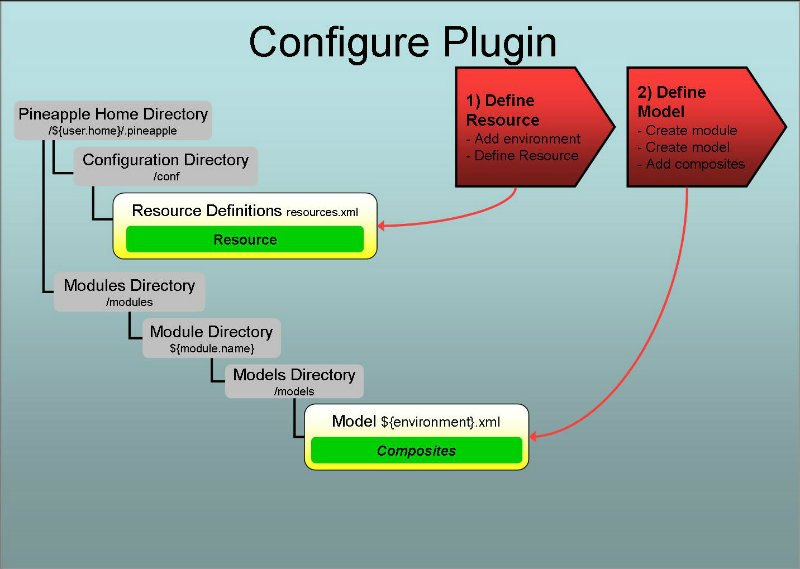

Introduction
Overview
Invoking the plugin
The plugin is invoked by the core component when the core component is used by one of the Pineapple clients. To trigger invocation by the core component the plugin needs to be configured.
Configuration
Two steps are needed to configure the plugin:
- Define resource: Define resource which enables usage of the the plugin. The resource enables usage by:
- Definition of connectivity information used by the agent plugin to connect to the remote Pineapple agent modeled by the resource.
- Definition of a mapping between the resource ID (e.g. some user defined key referenced from models) and the plugin ID (e.g. the Java package name which implements the plugin: com.alpha.pineapple.plugin.agent.
- Define the module model and add content to the model by defining a list of commands which are executed at the targeted resource(s). The commands are executed in sequence when the plugin is invoked with the model. The model is defined using the The agen plugin schema.
For more info about configuration of plugins:
- For info about resources and credentials read the Environment configuration document.
- For info about modules and module models read the Modules configuration document.
Execution of an operation
When the plugin is invoked with an operation (e.g. deploy-configuration) and a module model which defines a list of commands then plugin will iterate over the commands and execute them in sequence. The supported commands are:
- Distribute module distributes a module to a remote remote agent.
- Delete module deletes a module from a remote remote agent.
- Execute operation executes an operation at a remote agent.
- Distribute, execute and delete distributes a module to a remote agent, executes an operation and then delete the module after execution.
- Create environment creates a new environment at a remote agent.
- Refresh environment configuration refreshes the environment configuration at a remote agent.
- Schedule operation schedule operation for periodic execution at a remote agent.
- Delete scheduled operation delete scheduled operation at a remote agent.
- Delete all scheduled operations delete all scheduled operations at a remote agent.
Why the invoked operation is ignored
The operation used to invoke the plugin is ignored because the commands supported by the plugin define semantics independent of any operation. The possible exception is remote invocation of an operation. In the case of remote invocation of operations, the current implementation of the plugin ignores the operation used to invoke the plugin. The operation used for remote invocation of a operation is defined explicit in the agent model.
Define resource
The purpose of defining a resource for this plugin is twofold:
- Define a mapping between the resource ID and the plugin ID. The resource ID is the user defined key which is referenced from module models which are targeting the resource. The plugin ID is the Java package name which implements the plugin: com.alpha.pineapple.plugin.agent.
- Define connectivity information used by the agent plugin to connect to the remote Pineapple agent.
To define a new resource, add a resource element to the target environment in the configuration file ${pineapple.home.dir}/conf/resources.xml:
<?xml version="1.0" encoding="UTF-8"?>
<configuration xmlns="http://pineapple.dev.java.net/ns/environment_1_0"
xmlns:xsi="http://www.w3.org/2001/XMLSchema-instance">
<environments>
<environment id="linux-vagrant" >
<resources>
<resource id="agent-node1" plugin-id="com.alpha.pineapple.plugin.agent" />
<property value="192.168.34.10" key="host"/>
<property value="1080" key="port"/>
<property value="1000" key="timeout"/>
</resource>
</resources>
</environment>
</environments>
</configuration>
For all the details about configuration of environments and resources, please visit the Environment Configuration Reference.
The semantics of the resource element is:
The id attribute
Identifies the resource uniquely in the current environment. This ID is referenced from models which intends to use the plugin.
Define the module model

A module defines the input used by Pineapple to execute operations. A module is defined by a directory layout. Part of a module is the model(s) which defines what happens when the module is invoked. A model is put together by one or more sub models from different plugins. Each plugin defines its own schema for its particular model
The agent plugin schema
This plugin defines a schema named The agent plugin schema which defines the http://pineapple.dev.java.net/ns/plugin/agent_1_0 namespace. For more information about where the schema can be found, refer to the Schema locations for plugins page.
Name and location of the the module model file
The list of commands which should be executed when the plugin is invoked are defined in the module model files which are located at ${module-dir}/models/${environment}.xml where:
- ${module-dir} is the module root directory which identifies the module with a unique name and version.
- ${environment}.xml is a module model file for a target environment, with ${environment} substituted with the environment name, e.g. linux-vagrant.xml for an environment named linux-vagrant.
If the model file doesn't exist for an environment where the agent should be used, then create the model file and name it after the target environment, e.g. linux-vagrant.xml for an environment named linux-vagrant.
The module model configuration schema
Module model files are defined using the module model configuration schema which defines the http://pineapple.dev.java.net/ns/module_model_1_0 namespace. Since module model files contain elements from multiple namespace all the elements and attributes should be qualified. The header and root element should be defined as (look in the Modules configuration document for more details):
This example shows definition of the minimal model file for linux-vagrant:
<?xml version="1.0" encoding="UTF-8"?> <mmd:models xmlns:xs="http://www.w3.org/2001/XMLSchema-instance" xmlns:mmd="http://pineapple.dev.java.net/ns/module_model_1_0" />
Adding the plugin schema to the model
The next step is to include the The agent plugin schema to get access to the entities defined by the schema:
<?xml version="1.0" encoding="UTF-8"?> <mmd:models xmlns:xs="http://www.w3.org/2001/XMLSchema-instance" xmlns:mmd="http://pineapple.dev.java.net/ns/module_model_1_0" xmlns:pap="http://pineapple.dev.java.net/ns/plugin/agent_1_0" />
Now we have a minimal module model file with three namespaces:
- xs: The basic XMLSchema schema which is only used in the root element of the document.
- mmd: The module model schema which is used to define the skeleton of a model file.
- pap: The agent plugin schema which is used to define agent commands.
Defining the model which targets resources
Add a new model with a target-resource attribute. The value of the target-resource should match the id of the resource which was defined previously in the section Define resource, e.g. agent-node1:
<?xml version="1.0" encoding="UTF-8"?>
<mmd:models xmlns:xs="http://www.w3.org/2001/XMLSchema-instance"
xmlns:mmd="http://pineapple.dev.java.net/ns/module_model_1_0"
xmlns:cep="http://pineapple.dev.java.net/ns/plugin/agent_1_0" />
<mmd:model target-resource="agent-node1">
<mmd:content />
</mmd:model>
</mmd:models>
Add content to the model which uses the plugin through the agent-node1 reference:
<?xml version="1.0" encoding="UTF-8"?>
<mmd:models xmlns:xs="http://www.w3.org/2001/XMLSchema-instance"
xmlns:mmd="http://pineapple.dev.java.net/ns/module_model_1_0"
xmlns:cep="http://pineapple.dev.java.net/ns/plugin/agent_1_0" />
<mmd:model target-resource="agent-node1">
<mmd:content>
<pap:agent>
</pap:agent>
</mmd:content>
</mmd:model>
</mmd:models>
Targeting multiple agents
In the example above, a single resource (e.g. the agent defined by agent-node1) was targeted by the model. The usefulness of the plugin is increased when multiple resources is targeted at once. Multiple agents can targeted by defining a list or using a regular expression.
Define agent commands in the module model
Define a sequence of agent commands which should be executed when Pineapple is invoked with the model:
<?xml version="1.0" encoding="UTF-8"?>
<mmd:models xmlns:xs="http://www.w3.org/2001/XMLSchema-instance"
xmlns:mmd="http://pineapple.dev.java.net/ns/module_model_1_0"
xmlns:cep="http://pineapple.dev.java.net/ns/plugin/agent_1_0" />
<mmd:model target-resource="agent-node1">
<mmd:content>
<pap:agent>
<pap:distribute-module module="some-module" />
<pap:delete-module module="another-module" />
<pap:execute-operation module="some-module" environment="alpha" operation="test" />
<pap:distribute-and-execute-operation module="some-module" environment="alpha" operation="test" />
<pap:refresh-environment-configuration />
<pap:create-environment environment="dave's-environment" description="Environment used by dave./>
<pap:schedule-operation name="myjob" module="infrastructure-test-004-pineapple-web-client-returns-http-200" environment="local" operation="test" scheduling-expression="0 * * * * *" description="Test Pineapple is running, executed hourly."/>
<pap:delete-scheduled-operation name="myjob" />
<pap:delete-all-scheduled-operations />
</pap:agent>
</mmd:content>
</mmd:model>
</mmd:models>
distribute-module command
The command distributes a module installed in Pineapple to the targeted agent(s) by:
- Compressing the module into a ZIP archive.
- Uploads the ZIP and installs the module to the targeted agent(s). If the module exists at the agent(s) then it is overwritten.
After execution of the command the module is ready for usage at the targeted agent(s).
The module attribute defines the name of the module which is distributed to the agent(s).
delete-module command
The command deletes a module installed at the targeted agent(s).
The module attribute defines the name of the module at the agent which is deleted.
execute-operation command
The command starts the remote execution of a module installed at the targeted agent(s). The execution is asynchronous and the master will continuous poll the agent for updates which are added to the execution output rendered at the master.
The module attribute defines the name of the module at the agent which executed.
The environment attribute defines the name of the target environment.
The operation attribute defines the operation which is invoked.
distribute-and-execute-operation command
This command is a composite of the tree command:
- distribute-module
- execute-operation
- delete-module
The command distributes the a module to the targeted agent(s), starts the remote execution of the module and finally deletes the module. This module is deleted even if the execution fails.
The module attribute defines the name of the module at the agent which executed.
The environment attribute defines the name of the target environment.
The operation attribute defines the operation which is invoked.
refresh-configuration command
The command refreshes the Pineapple environment configuration at the targeted agent(s) by re-initializing Pineapple which includes:
- Reloading the set of modules.
- Reloading the resources.
- Reloading the credentials.
The command has no attributes.
create-environment command
The command create a new environment in the environment configuration at the targeted agent(s). The purpose of this command is (in time) to provide support full support of agents through the agent plugin.
The environment is created both for resources and credentials.
The environment attribute defines the name of the new environment.
The description attribute defines an optional description.
schedule-operation command
The command schedules an existing module for periodic execution at the targeted agent(s). The execution is periodic and asynchronous.
The mandatory name attribute defines the name of scheduling job. Must be unique.
The mandatory module attribute defines the name of the module at the agent scheduled for execution.
The mandatory environment attribute defines the name of the target environment.
The mandatory operation attribute defines the operation which is invoked periodically.
The mandatory scheduling-expression attribute defines the scheduling expression using Cron syntax to defined the frequency of the module execution.
The mandatory description attribute defines the a human readable discription of the scheduled operation.